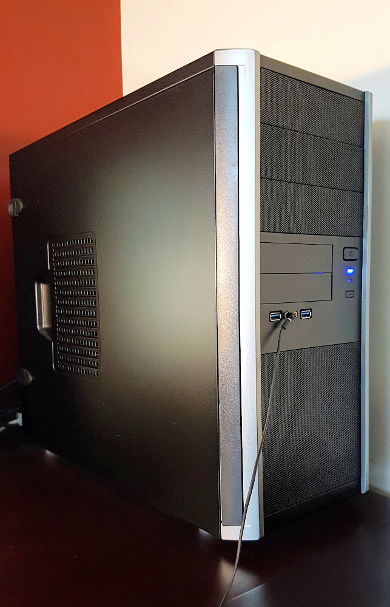

It's 2018, and my 5 year old trusty Thinkpad 420i has decided to overheat for its last time. After more than 10 years of laptops, I decided to go for a desktop. I spoke to a fellow at Linux Now, who supplies custom boxes with Linux preinstalled, and are located in Melbourne, Australia (as of writing, no complaints with their service at all). A week later, I was booting up and my old laptop was headed to the nearest e-waste recycling centre. Here's the obligatory Larry cowsay:
$ cowsay `uname -a`
_______________________________________
/ Linux dooby 4.12.12-gentoo #1 SMP Tue \
| Nov 28 09:55:21 AEDT 2017 x86_64 AMD |
| Ryzen 5 1600X Six-Core Processor |
\ AuthenticAMD GNU/Linux /
---------------------------------------
\ ^__^
\ (oo)\_______
(__)\ )\/\
||----w |
|| ||
Being a desktop machine, it lacks portability but this is mitigated as you can run Gentoo on your phone. Combine your phone with a Bluetooth keyboard and mouse, and you have a full-on portable workstation. Your desktop will be much more powerful than your laptop, at half the price.

And of course, here are the hardware specs.
- AMD Ryzen 5 1600X CPU (5 times faster than my laptop) As of writing, these Ryzens are experiencing some instability related to kernel bug 196683, but the workarounds in the bug report seem to solve it.
- NVIDIA GeForce GTX 1050Ti GPU (16 times faster than my laptop). Yes, proprietary blob drivers are in use.
- 16GB DDR4 2400Mhz RAM
- 250GB SSD
- 23.6in 1920x1080 16:9 LCD Monitor
- Filco Majestouch-2, Tenkeyless keyboard. If you've never needed a clean-cut professional mechanical keyboard that isn't as bulky as the IBM Model M, I'd highly recommend this one.
Software-wise, it is running Gentoo Linux with KDE. Backup server is hosted by rsync.net. The worldfile is largely the same as my old laptop, with the addition of newsbeuter for RSS feeds. Happy 2018!